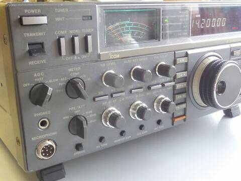
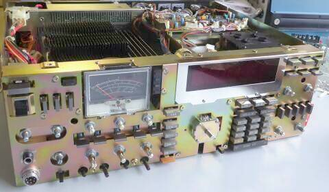
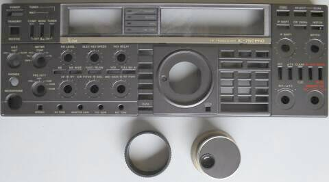
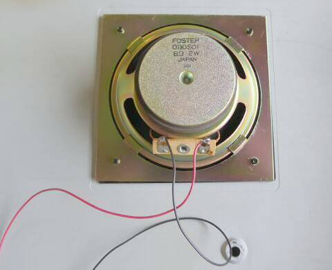
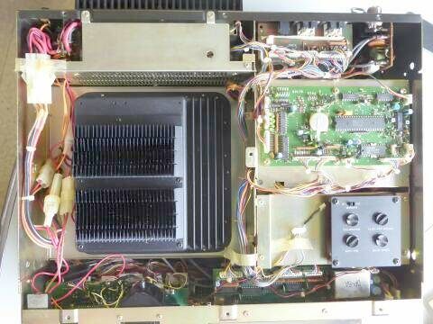
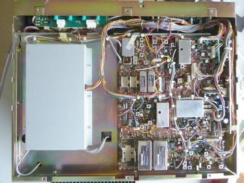
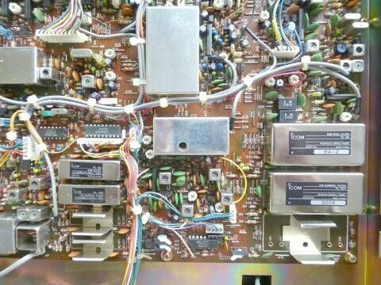
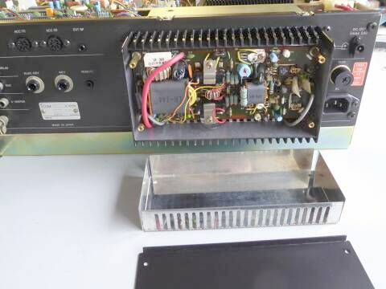
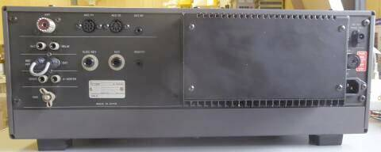

 |
最近のマシンは、感覚だけでは操作できない階層を持つものも多いですが、この頃は、まだまだダイレクトな操作が可能です
その分、ツマミ類、ＳＷ類が多いです
メーターは、もちろんアナログ式です |
 |
清掃のため、フロントパネルを外した状態
清掃でいえば、ダイキャストパネルのアクリルパネルが外せないため、隙間の汚れをふき取ることができません、残念
３０年も経つと両面テープもしっかり張り付いて・・・グレーの横長のエンブレムが取り外せません
|
 |
この時代は、お金をかけています
このフロントパネル ダイキャスト製で、その重さは、１５０２ｇあります
メインノブも、ゴムカバーを含めると２４２ｇ
なかなか重量感という重厚感があります |
 |
内臓スピーカーも、大型のものが採用されています
フォステクス製 ８Ω２Ｗ |
 |
上カバーを外した状態です
大きく面積を占めて見える黒い物体は、ＳＷ電源部です
その右のチューナーＣＰＵ部バックアップ用のリチウム電池は、電圧を測ると３Ｖオーバーでしたので、交換せずそのままに
ＡＣ電源ユニットの下にもＣＰＵバックアップ電池がいます |
 |
下カバーを外した状態です
シールドで囲まれた部分は、ＲＦユニットです
これだけの筐体サイズであれば、ゆったりと収納できますね
|
 |
ＩＦフィルター部のアップ
このモデルは、９ＭＨｚ帯、４５５ＫＨｚ帯いずれも２．４ＫＨｚ幅、５００Ｈｚ幅のフィルターを標準で実装しています
ＩＦシフト（パスバンドチューニング）は混信除去機能としてこのクラスのマシンでは定番です
オプションは、ＣＷナロー／２５０Ｈｚフィルタ（９ＭＨｚ帯、４５５ＫＨｚ帯）と、ＡＭ用６ＫＨｚフィルタ（９ＭＨｚ帯）です |
 |
筐体が大きいせいか、１００Ｗファイナル部が小さく見えます |
 |
こちらは、リアパネル
非常にすっきりしています
リニアアンプ・受信専用アンテナ、あるいは専用受信機の接続、トランスバータの接続など考慮されています
ＣＩ-Ｖ ＰＣコントロールのためのシリアルポートも用意があります |
|
今回入手できたものは、保存状態もよく、電気的な動作もスペックを満足する状態でした
発売から３０年以上が経過したモデルなのですが・・・ |
| |
| 余談ながら、本機はＪＡＲＤ新スプリアス確認保証可能機器リストに掲載があります（定格を見ても、スプリアス発射強度ー６０ｄＢ以下と記載があります） |